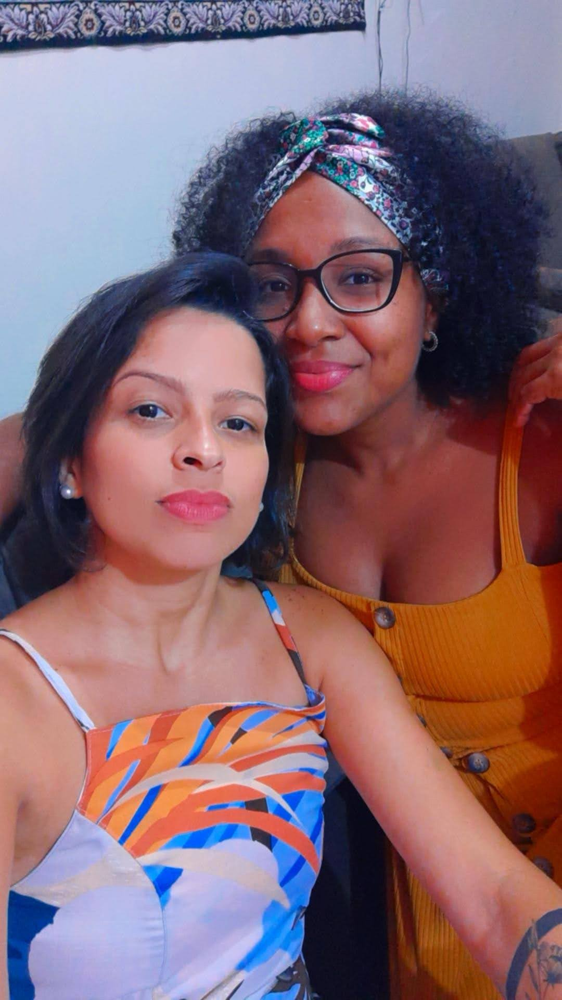

Vem conhecer essa história
Priscila
Priscila Karina Santos de Souza, 32 anos (completados recentemente) ✨, canceriana dramática sim 😠- não nego! Pernambucana, natural de Moreno. Apaixonada pelo Sport Clube do Recife 🏆. Eu amo futebol, não sei explicar só sentir! Estudante de programação de web. Sonhadora, corajosa, amável, sempre com um sorriso no rosto. Muita história pra contar, alguns lugares na memória, uns bons amigos pelo caminho e ainda muita coisa pra viver!
Renata
Renata Nascimento dos Reis, 32 anos, ariana braba ♈ - é do jeito dela e fim. Baiana arretada, Salvador sente falta dela até hoje. Apaixonada pela Beyoncé ♫, é tocar que ela sabe a letra. Formada em Estética e Cosmética, finalizando a segunda graduação dessa vez em Farmácia. Forte, segura, sabe se reerguer como ninguém. Passou por muitos lugares diferentes e deixou sua marca em cada um deles. Ela tem muito pra viver e o mundo é pequeno para essa gigante, ela merece o infinito!

Nós!
Nos conhecemos através de amigos em comum.. Vamos falar a verdade que Renata se apaixonou de cara, foi ver minha foto e paah! Amor a primeira vista! Não posso negar que quando bati o olho naquela foto, uma mulher linda vestida de branco, com trança no cabelo, um sorriso incrÃvel... Não podia deixar de encontrar aquela mulher! Nos vimos uma única vez e desde aquele domingo de carnaval não nos largamos mais. Foram 3 mudanças, alguns estados visitados, milhões de fotos tiradas, muitas memórias criadas, brigas de vez em quando (Porque todo casal briga né gente? Apimenta a relação). Passamos por várias transformações e continuamos firmes e fortes. Ela é o meu apoio e eu sou o porto seguro dela! Se passaram 2 anos e 4 meses desde então, não imagino meus dias sem ela e sinto que essa história acabou de começar! 💛🍀
.jpg)